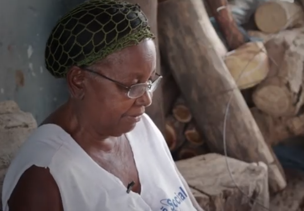
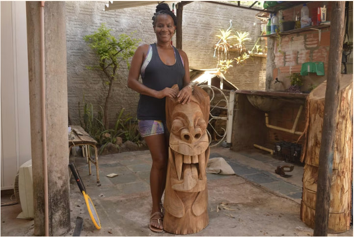

Expedito Viana
“Ainda na infância, comecei a fazer trabalhos, miniaturas e os meus brinquedos, através do meu pai que trabalhava com as ferramentas (...). Basta desenhar algo e já consigo imaginar a forma sendo feita na madeira.”
Explorar HistóriaAs águas do São Francisco não trazem apenas o sustento, mas carregam o mistério e a arte que moldaram a identidade de Pirapora. Entre as batidas do formão na madeira e o olhar atento às correntezas, surgiram as carrancas — figuras míticas que protegiam os barqueiros e hoje guardam a nossa história.
Nesta galeria, celebramos os homens e mulheres que, com suas mãos e sabedoria, mantêm viva a tradição barranqueira. São mestres artesãos, contadores de histórias e guardiões de um ofício que transforma madeira bruta em memória viva.
“A madeira grita o que quer ser, e o mestre apenas obedece o desenho que a alma do rio já traçou.”
(Esta galeria é dedicada aos mestres das carrancas e aos detentores de saberes que protegem a herança cultural do Velho Chico em nossa região.)
“Ainda na infância, comecei a fazer trabalhos, miniaturas e os meus brinquedos, através do meu pai que trabalhava com as ferramentas (...). Basta desenhar algo e já consigo imaginar a forma sendo feita na madeira.”
Explorar História"Mestre Gelson assina a própria história no cedro, unindo a técnica herdada do pai ao mistério das figuras que um dia cortaram as águas do Velho Chico."
Explorar História
"Sem o rio, nós não somos nada, porque somos a alma do rio. Se nós não defender ele, quem que vai defender?"
Explorar História"Mestra do entalhe e da resiliência, Maria Martinha perpetua o ofício familiar como um símbolo de afeto, mantendo viva a história que esculpe o rosto da nossa cidade."
Explorar História
"Entre o formão e a madeira, Mestra Bonifácia mantém vivo o pulsar do São Francisco, perpetuando a tradição das carrancas como um ato de puro amor e resistência."
Explorar História